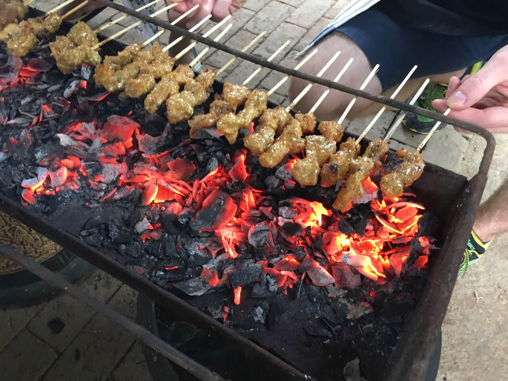
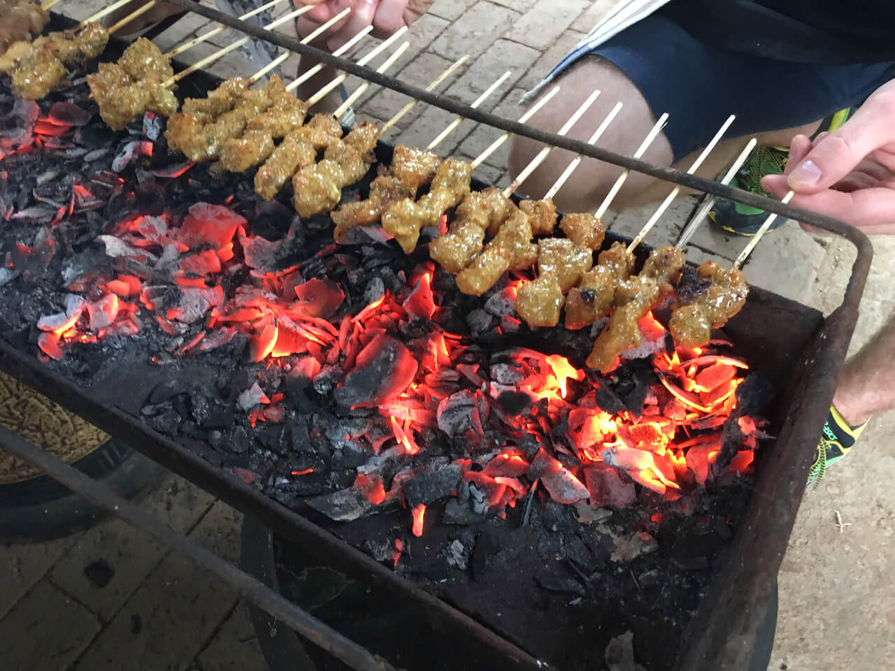

The Experience
We host a maximum of 3 classes per week and only 8 participants per class because of our duties as Priest and Priestess at temple. And because our team of 5 prep cooks prepares in advance for an entire day for each class.
You'll get an "inside" view of real Balinese life – learning the secrets of Balinese ceremonies and the special role of food in temple offerings.
Adi will teach you his step-by-step recipes, not found anywhere else, that he’s honed over 3 decades. You'll learn recipes mastered in a traditional Balinese family compound where the head of the house is a passionate gardener and cook.


 
